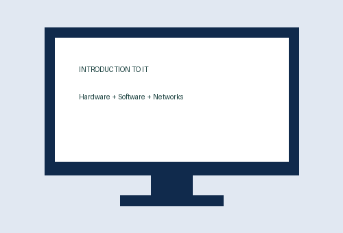

Hardware & software
Learn about computer parts and the programs they run.
IT basics
Learn what makes computers work, how devices connect, and how information technology supports everyday life.
Information technology (IT) is the use of computers, software, networks, and other systems to store, process, and share information. IT supports activities such as sending email, attending online classes, managing business records, and protecting personal data.
This website explains basic IT terms and gives examples of how they are used.
Start with hardware →
Learn about computer parts and the programs they run.
Learn how devices connect and how to keep information safe.
Review seven common IT terms.
After reviewing the topic pages, try the 10-question self-assessment quiz. Review feedback to identify topics to revisit.